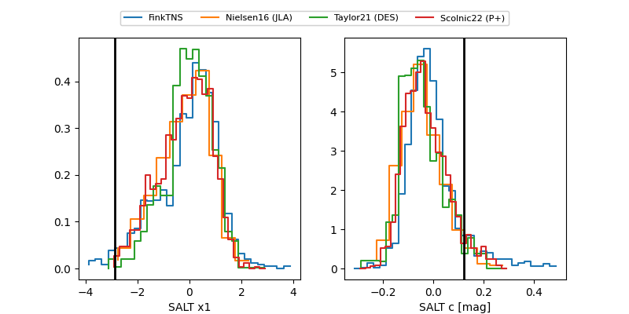

FINK: ZTF25abmwynb
Lasair: ZTF25abmwynb
ALeRCE: ZTF25abmwynb
TNS: 2025wlf
YSE: 2025wlf
ZTF25abmwynb (ztf,fink)
2025wlf (tns,yse)
equatorial (ra, dec) = (11.7708,-11.07691)
galactic (l, b) = (119.0728,-73.91602)

last atlasc=19.08, atlaso=19.08, ztfg=19.35, ztfr=19.10
2 atlasc, 5 atlaso, 7 ztfg, 8 ztfr detections